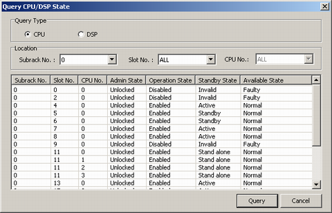

This describes how to query the status of the CPUs and how to query the status of the DSP unit in the GDPUC/GDPUX/GDPUP.
Prerequisites
- The LMT runs normally.
- The communication between the LMT and the BSC is normal.
- All the boards are functional.
Context
Table 1 describes the CPU/DSP states that can be queried on the LMT.
Table 1 Board statusParameter
|
Meaning
|
Value Range
|
|---|
Admin state
|
Indicating whether the current board can provide services or not
|
- Lock: The current board cannot provide services.
- Unlock: The current board can provide services, but whether it actually provides services depends on other states, such as operation state and standby state.
- Shutdown: New services cannot access the current board, but the existing services on the board continue.
NOTE: After all the services on the board exit, the board enters Shutdown automatically.
|
Operation state
|
Indicating whether the current board can be operated or not
|
- Enable: The current board can be operated.
- Disable: The current board cannot be operated.
|
Standby state
|
Indicating whether the current board works in active mode or standby mode
|
- Active: The current board works in active mode.
- Standby: The current board works in standby mode.
- Unassigned: The current board is not in active/standby mode.
- Invalid: The current board is not ready.
|
Available state
|
indicating more information about the board usage state
|
- Normal: The current board is running properly.
- Fault: The current board is faulty.
- Uninstalled: The current board is not in position.
- Inconsistent: The status information about the current board is inconsistent with the configuration information about the slot.
- Power off: The current board is powered off.
|
The method of querying CPU state is the same as that of querying DSP state. This topic takes querying the CPU state as an example.
Procedure
- Through GUI
- On the LMT, choose .
- Select CPU in the Query Type area, set parameters in the Location area, and then click Query. The results are displayed, as shown in Figure 1.
Figure 1 Querying the CPU state
- Through MML
- You can run the following commands on the Local Maintenance Terminal to query the CPU/DSP status.
Copyright © Huawei Technologies Co., Ltd.